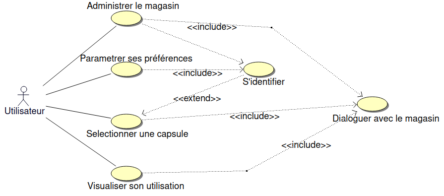
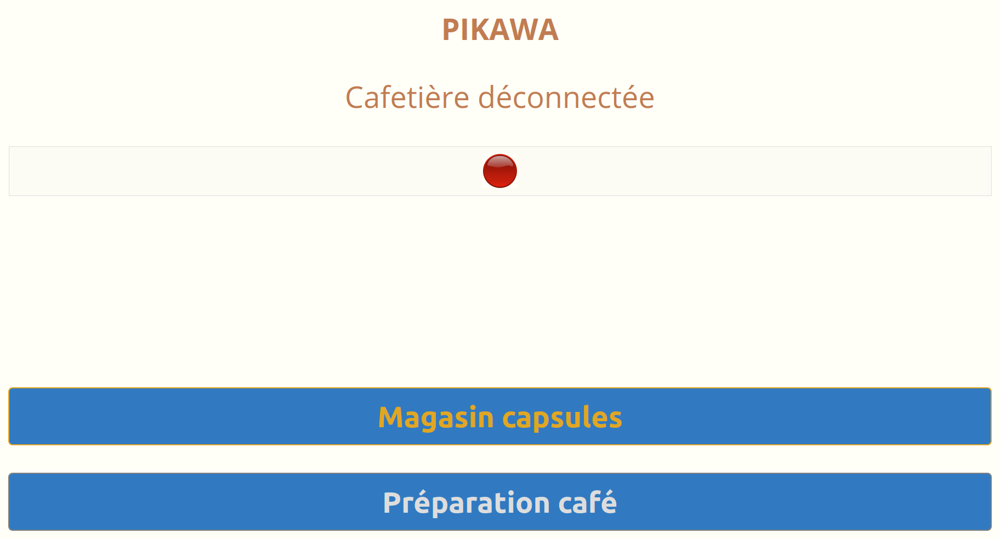
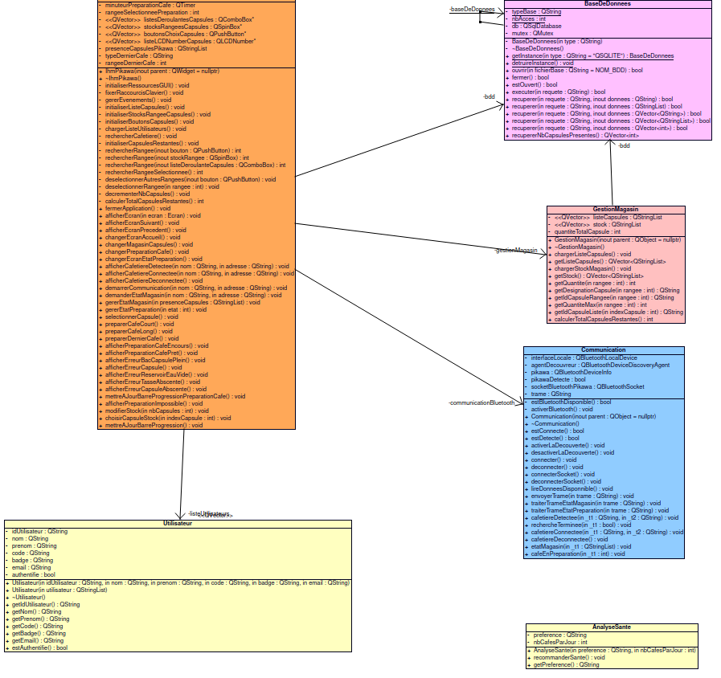
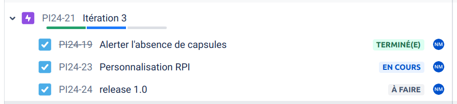
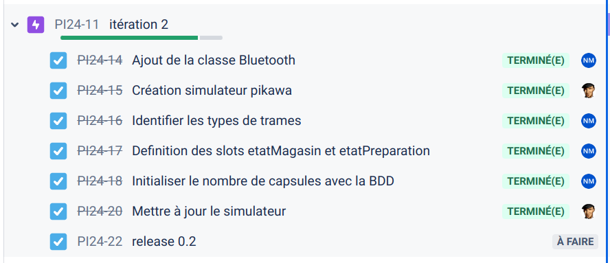
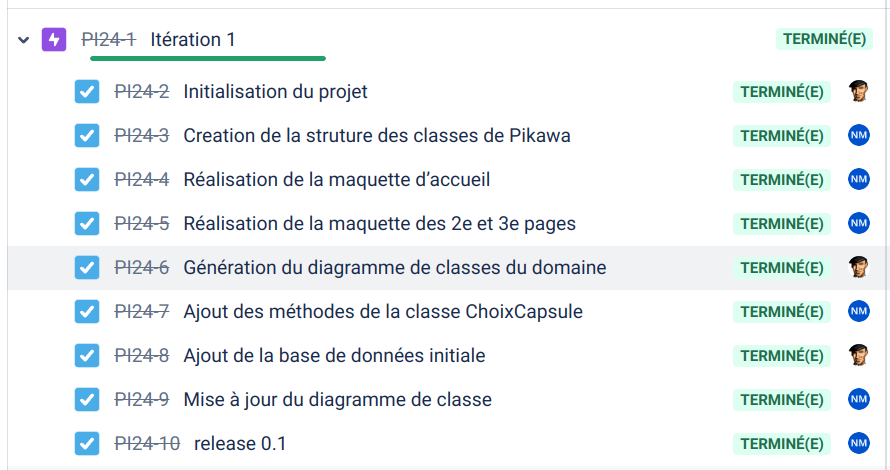

|
Projet pikawa
1.0
BTS SNIR LaSalle Avignon 2024
|
|
Projet pikawa
1.0
BTS SNIR LaSalle Avignon 2024
|


Pikawa est une machine à café connectée, équipée d’un magasin rotatif et motorisé de capsules, et pilotable grâce à un écran tactile et un logiciel embarqué sur Raspberry Pi.

L'utilisateur pourra :

| Fonctionnalités | OUI | NON |
|---|---|---|
| Administrer le magasin de capsules | X | |
| Gestion du type de capsule | X | |
| Suivi de l'état du stock | X | |
| Sélectionner une capsule | X | |
| Lancer la préparation d’un café | X | |
| Gérer l'état d'une préparation d’un café | X | |
| Être alerté en cas d'erreur | X | |
| Communiquer avec la cafetière | X |


Format général : #PIKAWA~{TYPE}~[DONNÉES~]\r\n
Les différents {TYPE} de trames :
M : état du magasinP : préparation d’un caféTrames de requête/réponse pour le magasin
Format de la requête (application→cafetière) : #PIKAWA~M~\r\n
Cette trame est envoyée par l’application pour connaître l’état du Magasin (présence de capsule dans les rangées)
Format de la réponse (cafetière→application) : #PIKAWA~M~R1~R2~R3~R4~R5~R6~R7~R8~\r\n
Pour chaque Rangée de 1 à 8, la valeur 1 indiquera que la présence d’une capsule dans le magasin sinon 0
Exemple : #PIKAWA~M~0~0~0~0~0~1~0~0~\r\n
Seul la rangée 6 a une capsule
Trame de commande d’un café
Format de la commande (application→cafetière) : PIKAWA~P~NUMÉRO_RANGEE~LONGUEUR~\r\n
Le champ NUMÉRO_RANGEE aura une valeur de 1 à 8 pour sélectionner la capsule dans le magasin.
Le champ LONGUEUR aura 3 états possibles :
1 Ristretto (Court)2 Espresso3 Lungo (Long)Cette trame est envoyé lorsque l’utilisateur lance la Préparation d’un café
Exemple : #PIKAWA~P~6~3~\r\n
Explication : Préparation d’un café de type Lungo avec la capsule de la rangée 6
Format de la réponse (cafetière→application) : #PIKAWA~P~ETAT~\r\n
Le champ ÉTAT à 9 états possibles :
0 : le café est prêt ou au repos1 : le café est en cours de préparation2 : impossible (préparation déjà en cours)3 : erreur capsule4 : bac capsules plein5 : réservoir eau vide6 : numéro de rangée incorrect7 : type de longueur incorrect8 : absence tasse9 : absence capsule


https://btssn-lasalle-84.github.io/pikawa-2024/
©️ LaSalle Avignon 2024